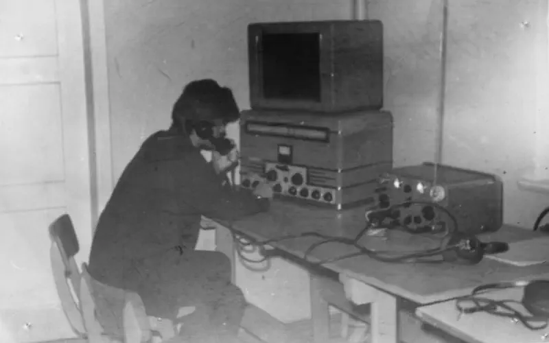
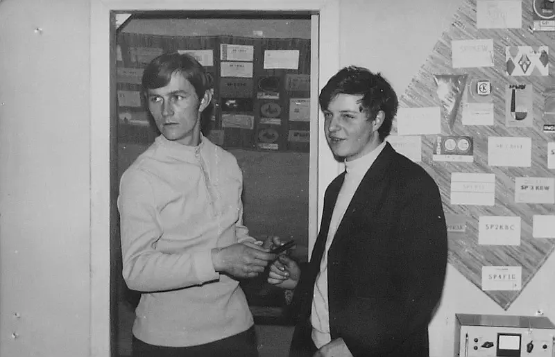
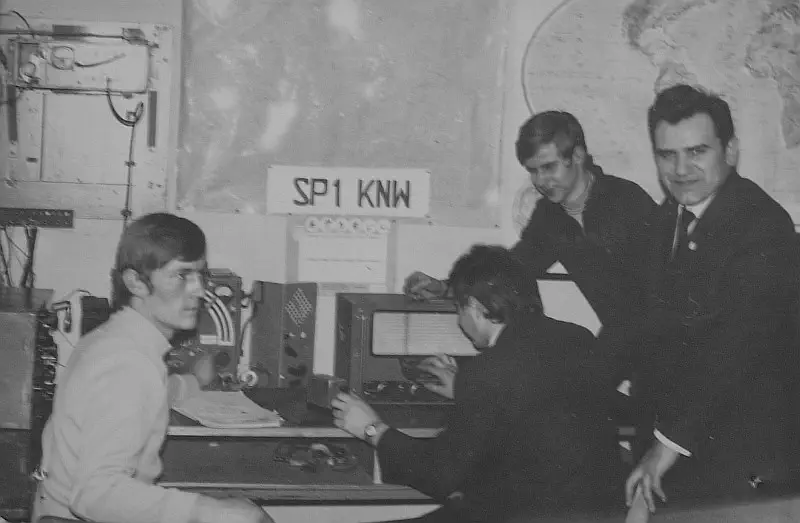
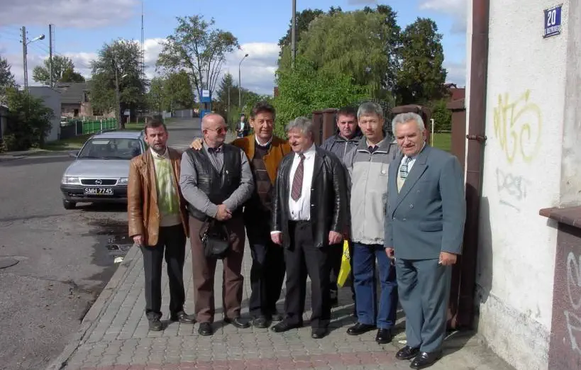
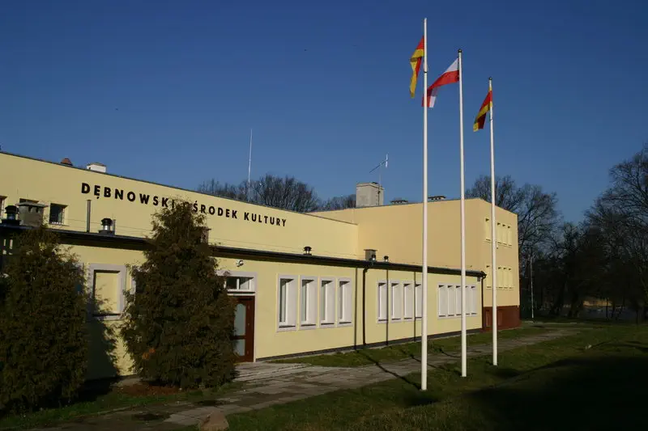
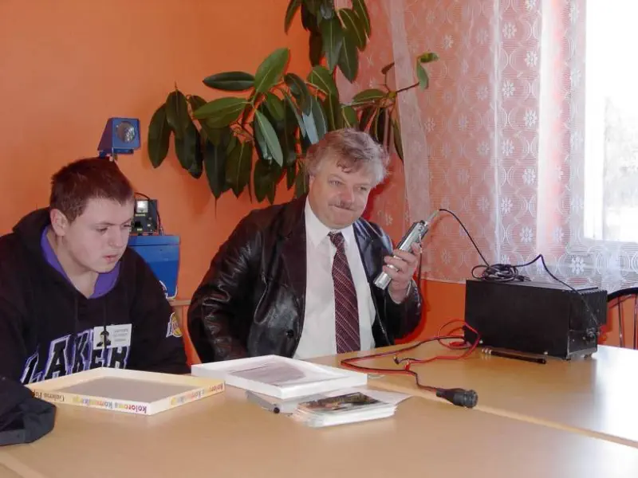
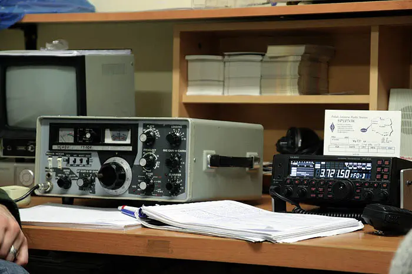
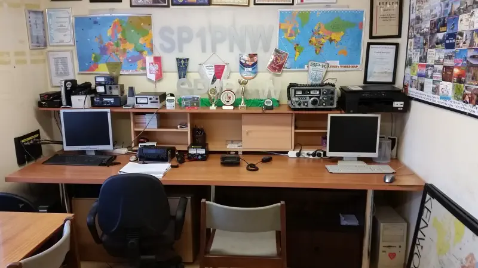
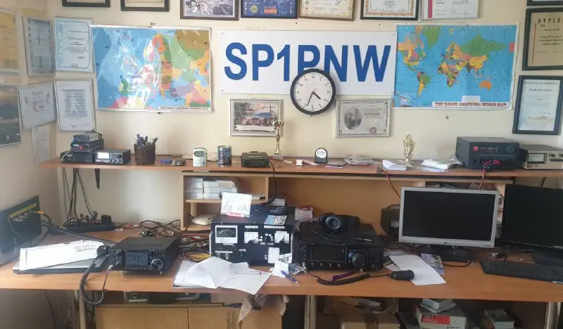

Poniżej zdjęcia założycieli klubu (lata '70 ubiegłego wieku) - jeszcze jako klub SP1KNW:




By opisać jak powstał klub, trzeba cofnąć się do lat 60.
W roku 1967 grupa zapaleńców, wśród których był Tadeusz (SP3WWS) założyła nasłuchowy klub
krótkofalowców o znaku SP-1-1148/k.
Brak odpowiedniego sprzętu oraz licencja nasłuchowa ograniczała działania klubu tylko do nasłuchu
pasm amatorskich.
W latach siedemdziesiątych powstaje klub nadawców i nasłuchowców o znaku SP1KNW
którego opiekunem został Henryk Kreczmer (SP3FYJ). Działalność klubu jest dalszą kontynuacją klubu
nasłuchowego. Wszyscy entuzjaści krótkofalarstwa skupiają się wokół SP3KNW. Klub znalazł siedzibę w
Młodzieżowym Domu Kultury przy ulicy Chojeńskiej (Biblioteka Pedagogiczna). W klubie
prowadzone są zajęcia z obsługi radiostacji, nauki radiotelegrafii, radiopelengacji, zajęcia
warsztatowe z zakresu budowy urządzeń radionadawczych i elektronicznych. Klub bierze udział w wielu
zawodach krótkofalarskich krajowych jak i międzynarodowych osiągając bardzo często wysokie lokaty.
. Ze względu na stan wojenny od roku 1981 na ten czas zaprzestają działalność wszyscy krótkofalowcy
i klub. Licencje są ponownie weryfikowane co powoduje prawie trzyletnią przerwę. Klub rozpoczyna
ponownie swą działalność w pomieszczeniach Spółdzielni Mieszkaniowej na osiedlu Waryńskiego, która
trwa około trzech lat. Klub jeszcze dwa razy zmienia siedzibę: Dębnowski Ośrodek Kultury i Szkoła
Podstawowa nr 1, po czym SP3KNW zaprzestaje swoją działalność (1995 rok)
Możemy przyjąć, żę klub SP1PNW, powstał na początku jako SP1KNW pod egidą LOK'u, później
cześć
osób należących do PZK założyło klub o dzisiejszej nazwie, (kluby PZK miały w sufiksie pierwszą
literkę P - dla tego KNW przekształciło się w PNW).
Od 2000 roku w Dębnowskim Ośrodku Kultura nieprzerwanie działają krótkofalowcy (informacja pobrana
ze strony Alfreda SP3DRY), na zdjęciu
pierwsi członkowie:

SP3FPF / X / X / SP1FMW / X / X / SP3FYJ
Początki, próba sprzętu UKF -zdjęcie poniżej - Jurek SP1FMW z Synem i DOK.



{kind=link}
{kind=link}
{kind=link}
{kind=link}
{kind=link}
{kind=link}
{kind=link}
{kind=link}
Nasze stanowisko nadawania w 2011 roku:
Na Zdjęciu TRX FT450 i lampowy Yeasu FT101:

Nasze stanowisko nadawania w 2016 roku:
Na zdjęciu poprzednia stacja APRS (na terminalu HP) z lewej u góry, na środku TRX FT450, a u góry z
prawej lampowy
Yeasu FT101:

Nasze stanowisko nadawania w 2022 roku:
Na zdjęciu nowy TRX FT DX 1200 i wzmacniacz lampowy na GU50:
